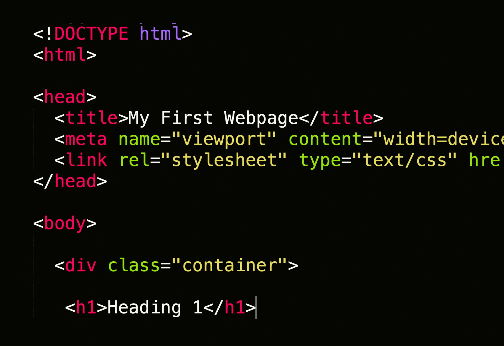
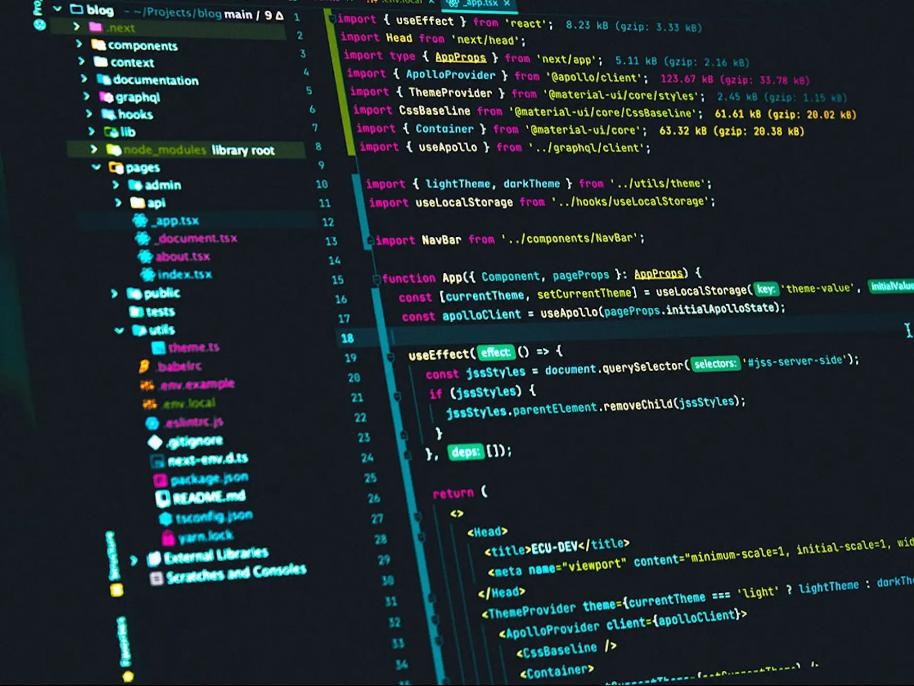
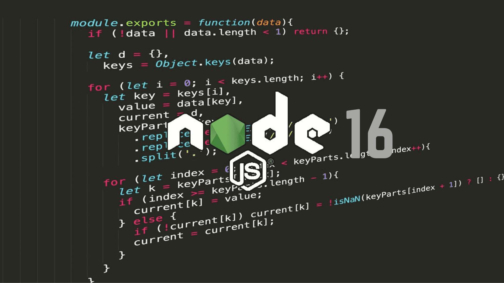

Augusto Eduardo Todisco
Estudiante de sistemas
Proyectos hechos:

Proyecto HTML/CSS
Este proyecto fue la primera interacción que tuve con la programación, fue prácticamente lo que me hizo ser lo que soy ahora, estoy muy agradecido por esto
Aquí esta el proyecto

Proyecto PYTHON
Este proyecto se trata de un pequeño avance del anterior, implementando un MVT, ya complejizando un poco mas la cosa.
Aquí esta el proyecto

Proyecto NODE
Este proyecto no esta del todo terminado, siempre hay mas cosas que ponerle, pero lo importante está.
Aquí esta el proyecto